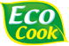
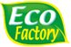
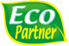
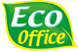
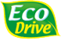

지속가능경영
- 환경 경영
- 2010년 9월 1일 환경경영 선포식을 개최하여 글로벌 기업으로 도약하는 시점에서 환경경영의 중요성을 강조하고
(주)오뚜기는 이를 계기로 ‘자연과 함께 맛으로 행복한 세상’을 만들기 위한 의미있는 걸음을 내디뎠습니다.
환경경영 전략
오뚜기는 “자연과 함께 맛으로 행복한 세상”이라는 슬로건 하에 전사가 일관된 목표와 방향성을 가지고 보다 체계적인 환경경영을 추진하기 위하여 전사 환경경영전략을 수립하였습니다.
오뚜기는 환경경영전략을 통해 기업의 모든 가치사슬(Value chain)에서 환경을 고려하여 기업의 환경적 책임을 다하는 동시에 환경규제를 포함한 기업 리스크를 감소시키고,
환경경제효율 향상을 통한 가치제고 활동을 전개하고 있습니다.
Life Cycle Thinking
환경경영을 추진함에 있어서 가장 중요한 고려 사항 중 하나는 전과정(Life Cycle) 관점에서 접근해야 한다는 것입니다. 전과정 관점의 접근법은 환경영향 저감을 위한 노력을 조직의 대표적인 활동인 생산에만 국한하지 않고 원료의 생산 단계에서 제품 소비 및 폐기 단계까지, 제품의 전과정에 걸친 환경영향을 파악하여 환경 개선 잠재력이 큰 과제에 대해 우선적으로 대응하는 효과적인 접근방식입니다.
오뚜기의 전과정 관점의 접근법, 즉 Life Cycle Thinking을 전사적으로 실현시키기 위해 오뚜기는 2010년 환경 엠블렘을 개발하였습니다.오뚜기의 Eco 엠블렘은 총 5개로 구성되어 있습니다.
각각의 엠블렘은 오뚜기의 환경경영전략과 직접적으로 연결되어 있으며, 오뚜기가 추구하는 진정한 의미의 환경경영을 상징합니다.
또한 5개의 Eco 엠블렘은 관련된 다양한 이해관계자 참여가 중요하다는 의미를 포함하고 있습니다. 예를 들어 Eco Cook은 단지 친환경적인 식품을 만들어 시장에 출시하는 것뿐만 아니라
소비자와의 효과적인 환경 커뮤니케이션을 통해 소비자가 스스로 친환경 제품은 식별하고 사용·폐기 과정에서 환경영향 저감 활동에 동참할 수 있도록 하는 것, 즉 생산·판매자 중심의
환경보호활동에만 국한하지 않고 소비자 중심의 활동으로까지 확대함으로써 Life Cycle Thinking을 실현하는 것을 목적으로 삼고 있습니다.
Eco 엠블렘은 다양한 곳에서 활용되고 있습니다. 우선 환경경영문화를 조성하고 정착시키기 위해 공장, 연구소, 사무실 등 임직원들의 눈에 잘 띌 수 있는 곳에 부착하고 소비자에게 환경정보를
제공하기 위해 해당제품 포장재에 표시하는 등 이해관계자와의 다양한 커뮤니케이션 활동에 활용되고 있습니다. 특히, 소비자와의 환경커뮤니케이션을 2011년 3월말 현재 일부 품목에
대해서만 Eco 엠블렘을 적용하고 있지만, 점차 이를 확대해 나갈 계획입니다.
-

- 연구개발, 영업, 마케팅
- 제품개발과정에서 제품 사용 및 폐기 단계의 환경영향을 고려할 뿐 아니라
소비자가 식품을 구매하고, 사용하고 폐기하는 과정에서 환경을 생각할 수
있도록 하는데 초점을 맞춘 환경개선 전략
-

- 제조
- 제품의 생산단계에서 사후처리보다 사전적 대응방식을 통해 자원사용을
저감하고 환경오염물질 배출을 없애거나 저감함으로써 환경경제효율성
(Eco-efficiency)을 제고하기 위한 환경개선전략
-

- 구매
- 영향권(Sphere of influence) 내 조직이나 개인, 정부, 지역사회 및
NGO 등 이해관계자들과 상호협력이나 리더쉽 발휘를 통해 환경문제에
공동 대응함으로써 환경파트너쉽을 형성하는 환경개선 전략
-

- 경영지원
- 임직원의 업무활동 및 관련시설 운영과정에서 발생하는 직,간접적 환경영향을
저감하기 위한 환경개선전략
-

- 수송, 배송
- 제품의 수,배송 과정에서 발생하는 환경영향을 최소화 하기위해 환경영향을
모니터링하고 운송효율을 극대화 하기 위한 물류단계의 환경개선 전략
환경 보고서 발간
오뚜기는 2011년부터 에코 쿡, 에코 팩토리, 에코 오피스, 에코 파트너, 에코 드라이브 5개 항목에 대해 활동한 내용을 담은 환경 보고서를 발간하고 있습니다.